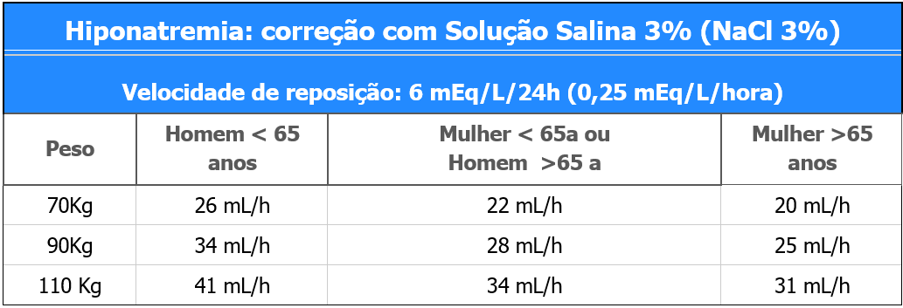
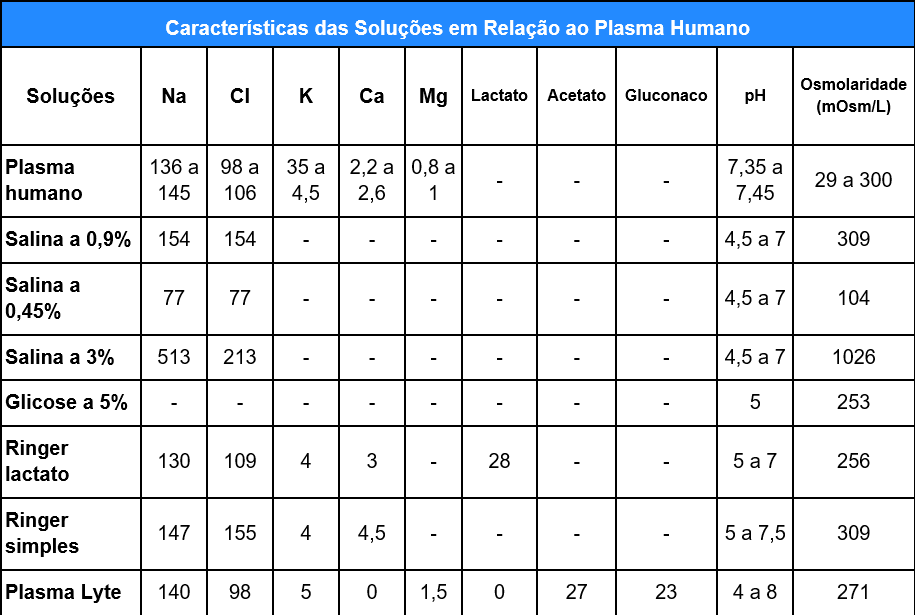
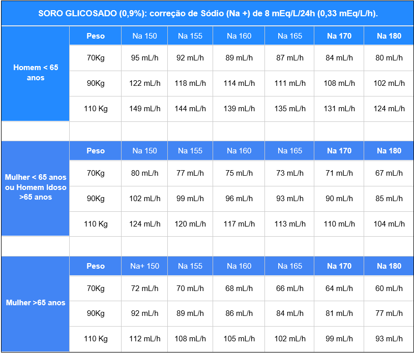
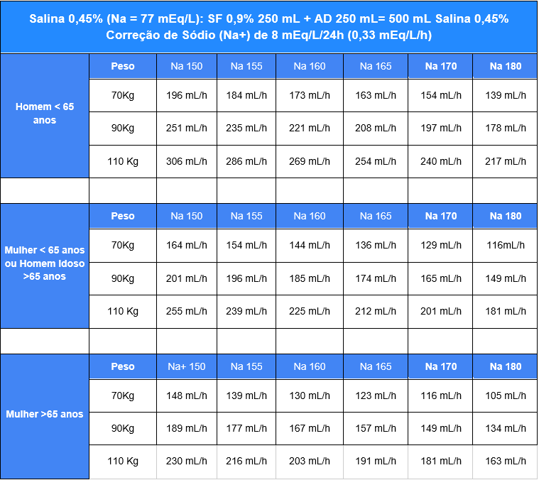

Distúrbio do Magnésio (Hipomagnesemia)
1. Hiponatremia (Na < 135 mEq/L). Na+ normal => 135 a 145 mEq/L
Hiponatremia Leve (130-134): em geral assintomático, não precisa de tratamento.
Hiponatremia Moderada (120 a 129): deve ser tratada se houver sintomas como tonteira,
dor de cabeça,
enjoo, vômito, desorientação, hiporreflexia
Hiponatremia Grave (< 120): vômitos persistentes, sonolência, convulsões, arreflexia,
respiração de
Cheyne Stokes, parada respiratória, herniação tronco cerebral
ETIOLOGIA: Passo a passo da Hiponatremia
Repetir Na+ e diferenciar Aguda (< 48h) X Crônica (> 48h)
Glicemia (HGT): +2 mEq/L de Na+ para cada excesso de 100 mg/dL de glicemia
Avaliar IR (Cl<30) + Ingestão água livre e Tiazídicos (clortalidona,
hidroclorotiazida)
Retenção de líquido: I. Cardíaca e Cirrose=> hipoperfusão => hipotálamo secreta ADH =>
edema, TJP, ascite,
congestão
Hipovolemia (avaliar NaU no spot urinário)
- Perda renal (NaU > 20 mEq/L): Sd. Addison, Lesão intracraniana
- Perda extra-renal (NaU < 20 mEq/L): diarreia, vômito, hipotensão ortostática,
taquicardia, mucosa seca
Euvolemia: avaliar osmolaridade urinária (avaliação indireta de dosagem ADH)
- Osmolalidade urinária > 300 mOsm/Kg: SIDAH (medicamentos, doença SNC),
hipotireoidismo, Ins. Adrenal (supressão de cortisol após suspensão)
- Osmolaridade (plasma): 2 × [Na+] + Glicose/18 (Normal: 275 - 290 mOsm/L)
TRATAMENTO da Hiponatremia
Objetivos
- Evitar piora evolutiva: restrição de água livre
- Paciente com patologia SNC: cuidado com hipertensão intracraniana
- Aliviar sintomas: náusea, vômito, tonteira, mais comuns nos quadros agudos
- Correção segura: 6 mEq/L em 24 horas => evitar Sd. Desmielinização Osmótica (pode ter
efeitos tardios)
Hiponatremia leve: em geral não precisa de tratamento. Restrição água livre.
Hiponatremia severa
(Na+ < 120) e Moderada com Sintomas
- Salina Hipertônica 3% (NaCl): 890 ml de NaCl 0,9% + 110 ml de NaCl 20%
- Se sinal de gravidade (convulsão, coma, Ins. respiratória) => Salina Hipertônica 3%: 100
mL IV em 20 minutos => Medir Sódio sérico => suspender se elevação de 5 mEq/mL ou melhora dos
sintomas => Pode repetir até 2 vezes (300 mL Salina hipertônica 3%)
- Opção na Emergência: 50 mL Bicarbonato de Sódio 8,4%
- Pacientes sem sintomas severos: corrigir até 6 mEq/L em 24 horas (Tabela abaixo)
- Na+ a cada 4 horas => reavaliar

2. Hipernatremia (Na > 145 mEq/L)
Hipernatremia Leve (Na 146 a 150): sem sintomas
Hipernatremia Moderada (151 a 157): sede, enjoo, mal estar, reflexos vivos
Hipernatremia Grave(≥158): sintomas severos podem ocorrer como vômitos, agitação, letargia, fraqueza,
hiperreflexia, tremores, ataxia, torpor, convulsões, choque.
ETIOLOGIA
Hipervolêmica: aumento ACT (soluções hipertônicas, CAD, PCR, IRA)
Normovolêmica: redução ACT (Diabetes Insipidus)
Hipovolêmica: redução ACT (baixa ingestão de água, Diarréia,
sudorese, queimadura,
diuréticos, hipodipsia)
Crônica ( > 48h: maioria): redução ingestão de água (idoso acamado, p.ex)
Aguda (< 48h): Diabetes insipidus (doença aguda ou pós operatório)
AVALIAÇÃO IMPORTANTE
Água corporal total (ACT):
- Idade < 65 a (H= 60% peso; M=50% peso), Idade > 65 a (H=50% peso, M=45% peso); Crianças
(60% peso)
Déficit de água corporal = ACTx [(Na plama/140) -1]. Exemplo:
- H, 45a, 70Kg, Na+ 158 mEq/L ⇒ Def. ACT= >(70x0,6)x(158-140)/140 => 5400 mL
- Em casos graves: volume a ser reposto em 24 horas

TRATAMENTO da Hipernatremia
Quadro Agudo (< 48h): instabilidade, alteração de sensório, convulsão
- Repor déficit de Água Livre em 24h
- SG 5% (3-5 mL/Kg/h) => Reduzir para 1 mL/Kg/h se Na < 145 e manter até Na<140
- Acompanhar Na+ e Glicose 3/3h => ajustar posologia com evolução
- Exemplo (70Kg): SG 5% 280 mL/H (BI) => Na < 145 mEq/L=> reduzir 70 mL/h até alcançar
Na< 140 mEq/L
Quadro Crônico (>48h):: sem sinais de gravidade, mais comum
- Reposição lenta (8 mEq/L em 24h): SG 5% ou Salina 0,45%. Vide tabelas abaixo.
- Acompanhar Na+ e Glicose 4/4h e ajustar se Na< 145 mEq/L


Considerações
- Os protocolos são usados como guias de tratamento para as doenças de forma genérica, não
específica ou exclusiva, e devem ser individualizados para cada paciente de acordo com avaliação
médica.
- Os protocolos estão em constante atualização e os profissionais de saúde devem estar
sempre atualizados com as mudanças de Guidelines das Sociedades Médicas (Conselho Federal de
Medicina e Associação Médica Brasileira e sociedades médicas de especialidades), não sendo este guia
uma conduta absoluta para todos pacientes.
- Os medicamentos são descritos com o nome de genéricos (substância química). A descrição
dos medicamentos éticos (de marca) não tem objetivo de preferência, mas apenas de referência, como
nomes populares no mercado e entre os pacientes.
- Medicamentos em itálico são opções de tratamento de acordo com o quadro clínico
individualizado de cada paciente e de responsabilidade do profissional de saúde que o prescreve, por
ser a prescrição médica um ato médico.